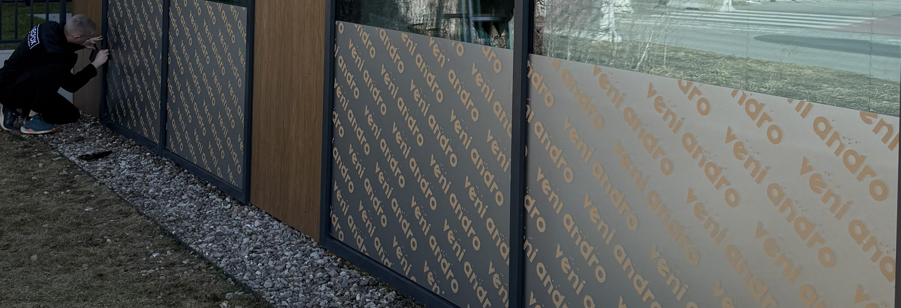
Oklejanie witryn, naklejki
na szyby i okna –
Poznań i cała Polska
Projektujemy, produkujemy i montujemy naklejki na witryny
Projektujemy, produkujemy i montujemy naklejki na witryny sklepowe, folie reklamowe na szyby, napisy na okna oraz pełnokolorowe grafiki wielkoformatowe. Realizujemy oznakowanie lokali usługowych, salonów beauty, biur, restauracji, sklepów i punktów handlowych. Oferujemy cięcie ploterowe, druk solwentowy Roland, laminowanie oraz profesjonalne oklejanie witryn na miejscu u klienta.
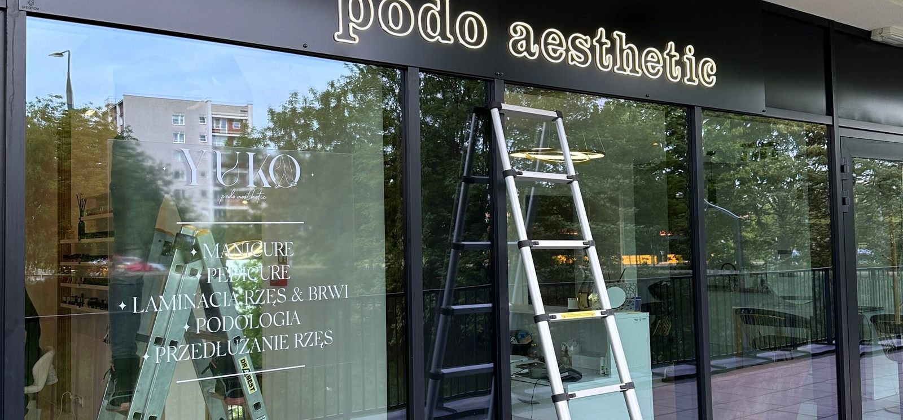
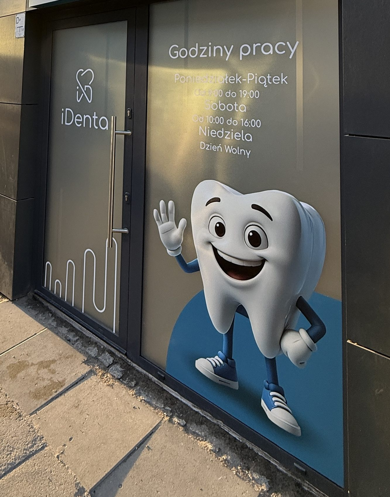
Naklejki na szyby i okna – reklama dopasowana do lokalu
Przygotowujemy logotypy, napisy, grafiki, godziny otwarcia, informacje kontaktowe, adresy stron, kody QR, oznaczenia drzwi, piktogramy, promocje i sezonowe dekoracje. Możliwe jest zarówno dyskretne oznakowanie jednej szyby, jak i kompleksowa grafika obejmująca całą witrynę. Każdy projekt dopasowujemy do wymiarów przeszkleń, podziałów ram i warunków ekspozycji.
Naklejki wycinane na ploterze tnącym
Napisy i elementy graficzne wycinamy precyzyjnie na ploterze tnącym z kolorowych folii samoprzylepnych. Technologia pozwala uzyskać czyste krawędzie liter, logotypów i piktogramów bez tła folii pomiędzy elementami. Sprawdza się przy nazwach firm, godzinach pracy, oznakowaniu drzwi oraz dekoracjach szyb.
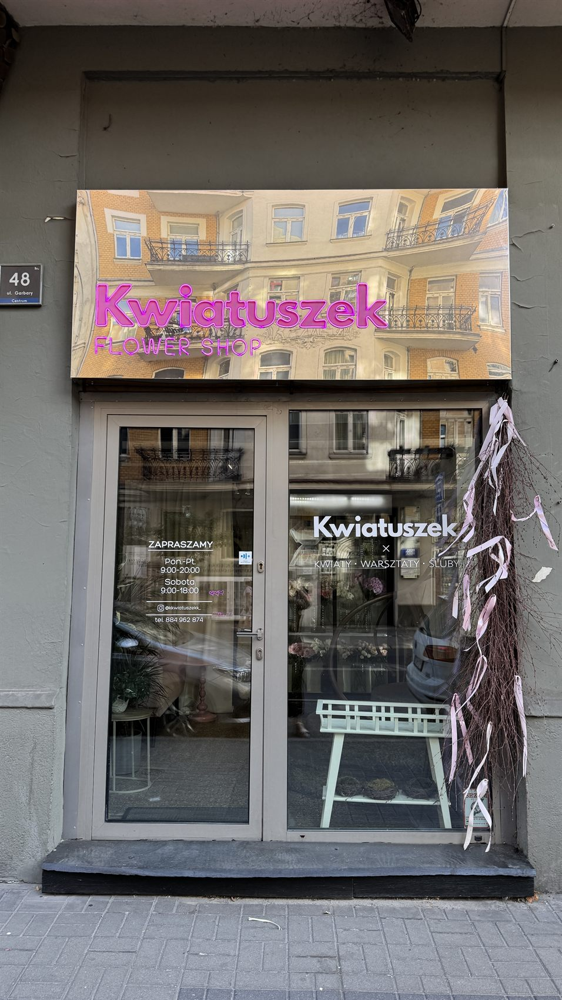
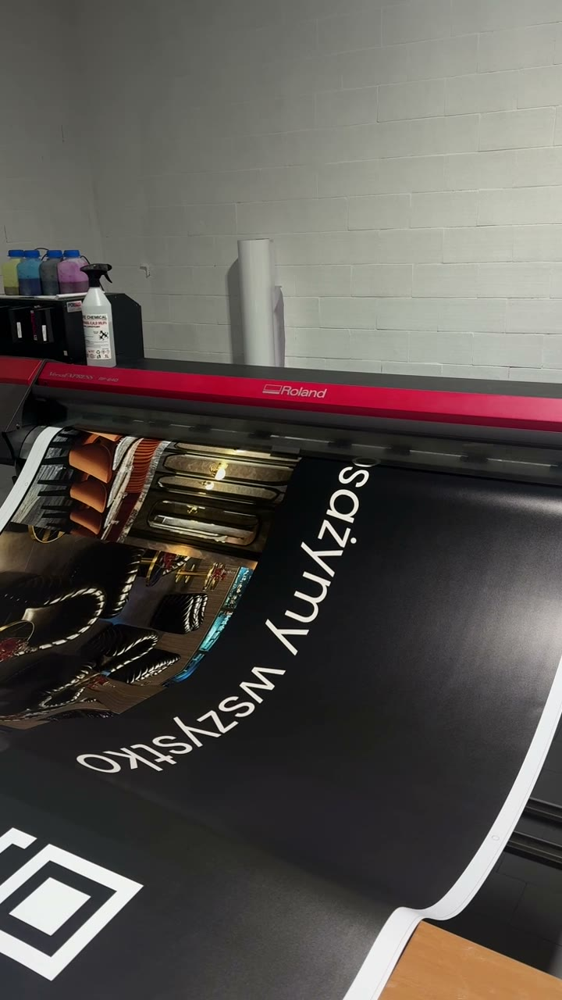
Druk naklejek na drukarce solwentowej Roland
Pełnokolorowe naklejki, zdjęcia, grafiki reklamowe i duże kompozycje drukujemy na drukarce solwentowej Roland. Dobieramy folię drukarską do rodzaju powierzchni i zastosowania. Druki mogą być zabezpieczone laminatem odpornym na promieniowanie UV i ścieranie, co pomaga zachować estetykę reklamy podczas użytkowania. Trwałość zależy od wybranego materiału, ekspozycji i pielęgnacji.
Folie Oracal – szeroka paleta kolorów
Oferujemy bogaty wybór folii samoprzylepnych ORACAL, w tym 641 (ekonomiczna folia do grafik płaskich), 551 (folia o podwyższonych parametrach), a także serie 651, 751C i 951 dobierane do wymagań projektu. Dostępne są warianty matowe i błyszczące, kolory klasyczne i intensywne. Ostateczna dostępność odcieni, szerokości i wykończeń jest potwierdzana przy wycenie.
Folie specjalne – lustro, metalik, holografia i struktury
Na zamówienie przygotowujemy dekoracje z folii o efektach specjalnych: złoto i srebro lustrzane, folie metalizowane, efekty szczotkowanego metalu, odcienie miedzi, folie brokatowe, fluorescencyjne oraz wybrane folie holograficzne i opalizujące. Wśród materiałów ORAFOL występują m.in. folie metalizowane ORACAL 351, folie brokatowe ORACAL 851 i folie dekoracyjne do szkła. Nie każdy efekt jest częścią tej samej serii ORACAL; materiały specjalne dobieramy indywidualnie.
Folia szroniona, mrożona i matowa na szyby
Folia szroniona na okna nadaje przeszkleniom efekt piaskowanego lub mrożonego szkła. Sprawdza się w gabinetach, salach konferencyjnych, biurach, salonach kosmetycznych i punktach usługowych. Możemy okleić całą szybę, wykonać pasy prywatności albo wyciąć w folii logo i wzory. Przykładowe serie dekoracyjne to ORACAL 8510, 8710 i 8810.
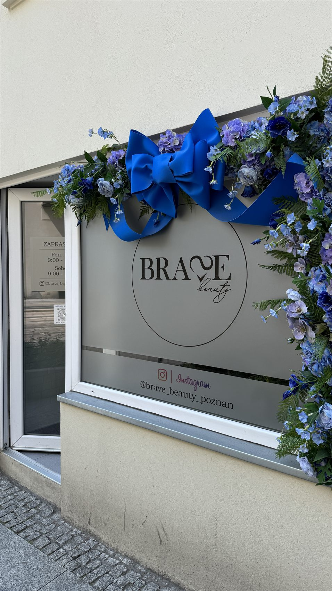
Folia perforowana One Way Vision (OWV)
Folia dziurkowana One Way Vision umożliwia umieszczenie kolorowej reklamy na przeszkleniu i zachowanie częściowej widoczności z wnętrza na zewnątrz. W typowych warunkach dziennych grafika ogranicza wgląd do lokalu. Nie jest to jednak gwarancja prywatności: efekt zależy od oświetlenia, a wieczorem, gdy wnętrze jest jaśniejsze od otoczenia, widoczność może się odwrócić. Folia OWV ogranicza również dopływ światła.
Folie lustrzane i efekt lustra weneckiego
Oferujemy dobór folii okiennych o efekcie refleksyjnym, w tym folie określane jako lustro weneckie. W ciągu dnia mogą ograniczać widoczność wnętrza z zewnątrz, jednocześnie umożliwiając obserwację otoczenia z lokalu. Działanie zależy od różnicy natężenia światła po obu stronach szyby; przy oświetlonym wnętrzu nocą nie zapewniają pełnej dyskrecji.
Folie przeciwsłoneczne i ograniczające UV
Możemy dobrać folie okienne ograniczające przenikanie wybranych zakresów promieniowania słonecznego, w tym UV, oraz zmniejszające nagrzewanie i odblaski. Stopień ochrony, przepuszczalność światła i kompatybilność z szybą zależą od konkretnego produktu. Parametry potwierdzamy w karcie technicznej; dobór folii wymaga uwzględnienia rodzaju przeszklenia.
Folie transparentne i kolorowe na szkło
Realizujemy także dekoracje z folii przezroczystych, półtransparentnych i barwionych. Pozwalają uzyskać efekt kolorowego szkła, subtelnego filtra lub podświetlonej grafiki. Wśród przykładowych rozwiązań znajduje się ORACAL 8300 oraz folie translucentne ORACAL 8500 i 8800, stosowane odpowiednio do charakteru projektu.
Projekt graficzny od podstaw i odwzorowanie logo
Przygotowujemy projekty od zera lub pracujemy na materiałach klienta. Odtwarzamy logotypy, dobieramy typografię, rozmieszczamy napisy na podziałach szyb i przygotowujemy wizualizację przed produkcją. Projektujemy również kody QR, godziny otwarcia, oznakowanie wejść, cenniki, komunikaty i grafiki promocyjne. Czytelność kodów QR i drobnych tekstów sprawdzamy z uwzględnieniem skali oraz rodzaju folii.
Oklejanie witryn sklepów, biur i lokali usługowych
Wykonujemy oklejanie witryn sklepów, salonów kosmetycznych, fryzjerskich, restauracji, kawiarni, gabinetów, biur, punktów medycznych i usługowych. Dobieramy zakres oklejenia do celu: reklamy, identyfikacji wizualnej, prywatności, dekoracji lub ochrony przed słońcem. Możemy połączyć kilka rodzajów folii na jednej witrynie.

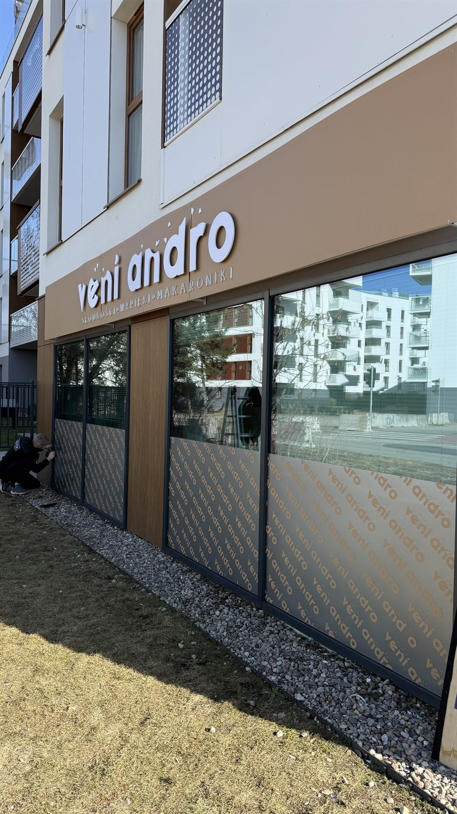
veni androFolia z powtarzanym napisem na szybach BRAVE beautyMatowa folia z logo na witrynie iDentaKolorowa grafika i godziny pracy


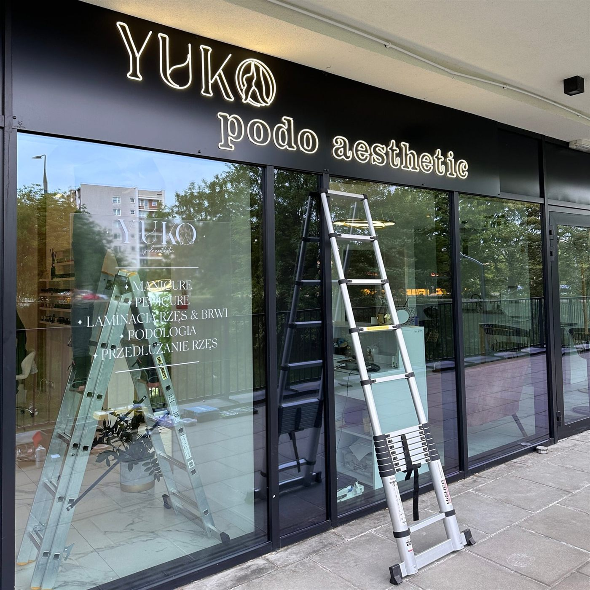
YUKOBiałe napisy na szybie witryny KwiatuszekNapisy i godziny otwarcia na drzwiach

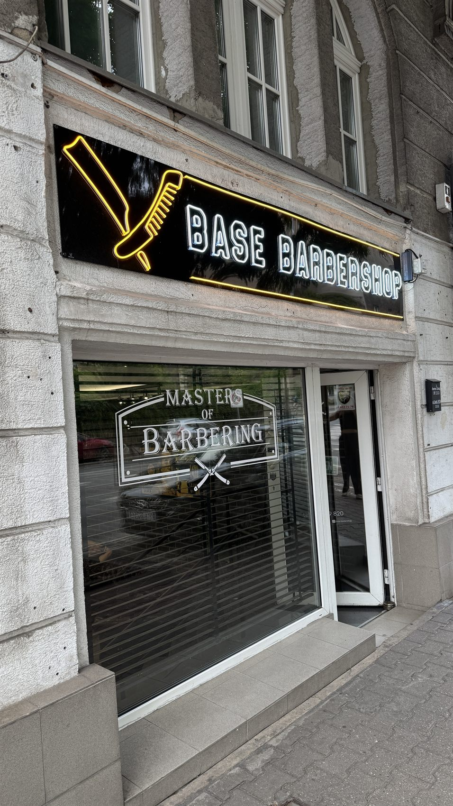
Base BarbershopBiały napis na szybie witryny
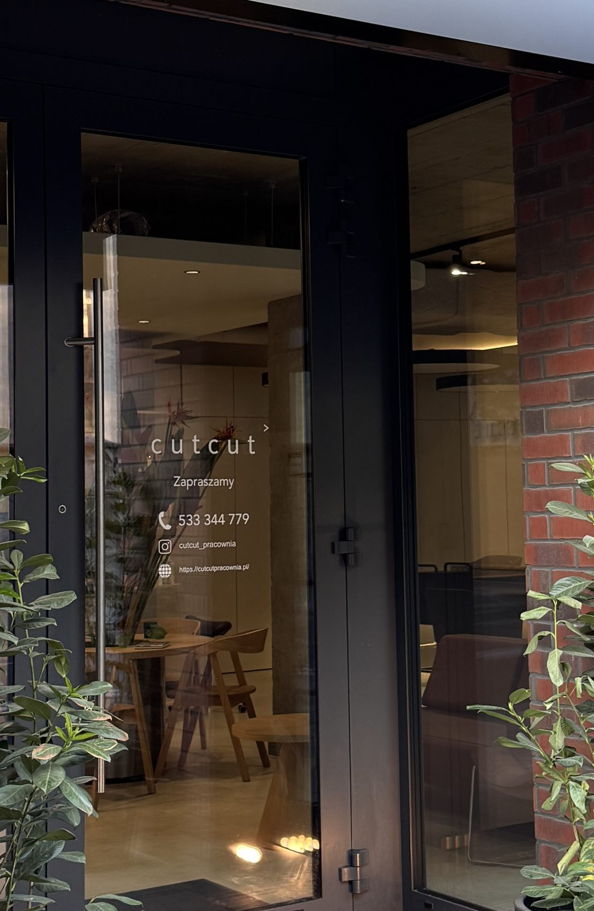
cutcutBiały napis na szklanych drzwiach
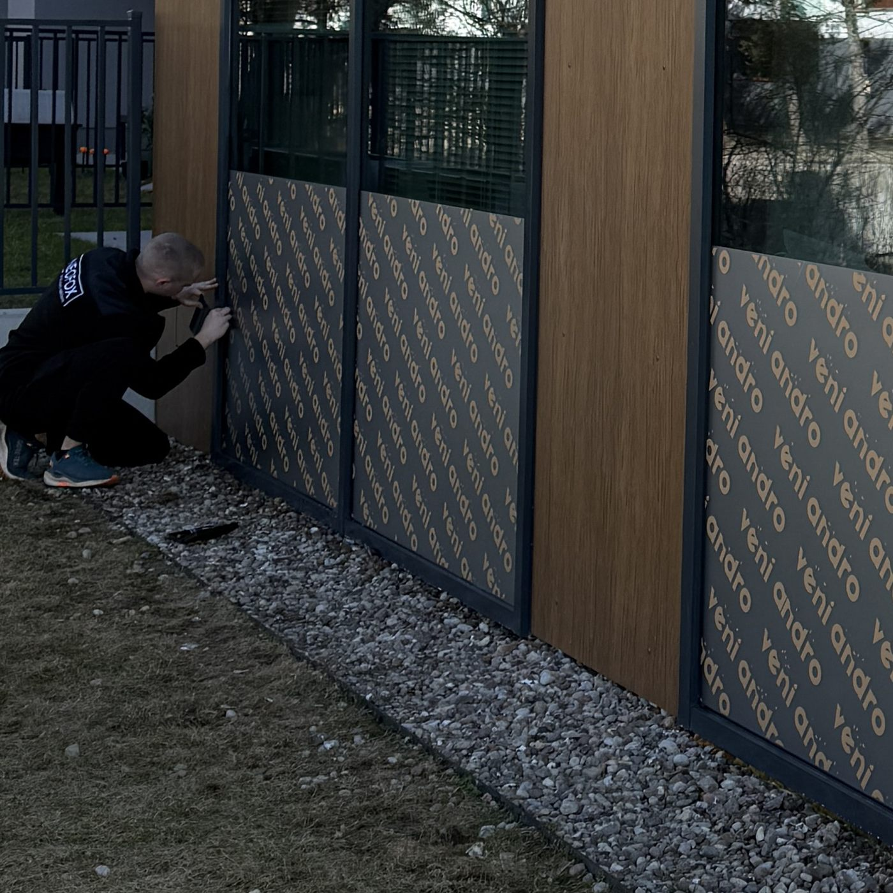
veni androOklejanie szyb na miejscuMontaż naklejek i folii – Poznań oraz inne miejscowości
Zapewniamy kompleksową usługę: pomiar lub weryfikację wymiarów, projekt, produkcję, przygotowanie powierzchni i montaż na miejscu. Oklejanie witryn w Poznaniu i okolicach realizujemy po indywidualnym ustaleniu terminu. Możliwy jest również montaż w innych miejscowościach; koszt dojazdu, przygotowania i instalacji wyceniamy indywidualnie.
Naklejki na wymiar – od małych oznaczeń po duże przeszklenia
Wykonujemy zarówno pojedyncze napisy i niewielkie naklejki informacyjne, jak i grafiki obejmujące wiele szyb. Przy większych formatach projekt może zostać podzielony na odpowiednio dopasowane bryty. Podczas przygotowania uwzględniamy widoczne krawędzie, uszczelki, ramy, klamki oraz kierunek aplikacji folii.
Jak wygląda realizacja zamówienia?
Prześlij zdjęcie witryny, orientacyjne wymiary, adres montażu oraz logo lub opis pomysłu. Doradzimy odpowiedni rodzaj folii, przygotujemy projekt i indywidualną wycenę. Po akceptacji wykonamy naklejki, zabezpieczymy wydruki zgodnie z wybraną technologią i ustalimy dostawę lub termin montażu.
Najczęściej zadawane pytania – FAQ
Zapytaj o swój projektCzy wykonujecie naklejki bez tła?
Tak, napisy i logotypy wycinamy z folii na ploterze tnącym.
Czy druk jest zabezpieczony przed UV?
W zależności od zastosowania oferujemy laminowanie wydruków w celu zwiększenia odporności na warunki zewnętrzne.
Czy folia OWV zapewnia prywatność nocą?
Nie zawsze; działanie zależy od oświetlenia.
Czy można zamówić własny kolor?
Tak, dobieramy odcienie z dostępnych wzorników folii, a w przypadku grafik drukowanych przygotowujemy kolorystykę projektu.
Czy wykonujecie montaż poza Poznaniem?
Tak, po indywidualnej wycenie.
Informacja o materiałach i wycenie
Wymienione serie ORACAL i rodzaje folii przedstawiają możliwe technologie i przykłady produktów. Ostateczny dobór oraz dostępność konkretnych kolorów, efektów i folii specjalistycznych potwierdzamy przed zamówieniem. Parametry folii przeciwsłonecznych i ochronnych wynikają z kart technicznych wybranych materiałów.
Zamów oklejanie witryn i naklejki na szyby
Szukasz trwałych naklejek na okna, folii szronionej, reklamy One Way Vision lub kompleksowego oklejenia witryny sklepowej? Projektujemy, drukujemy, wycinamy i montujemy folie reklamowe na szyby na zamówienie. Skontaktuj się z nami i prześlij zdjęcie lokalu oraz wymiary – przygotujemy propozycję materiałów i wycenę realizacji w Poznaniu lub innej miejscowości.
+48 730 627 143